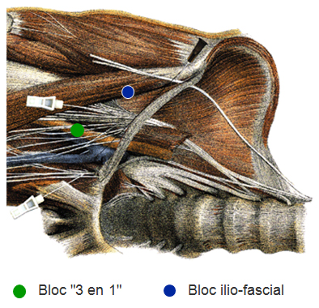

Bienvenue Sur Medecine Pro
Bloc iliofascial de l'enfant
EnfantSpécialité : traumatologie /
Points importants
- Formation initiale et maintien de compétence
- Maîtrise de la technique
- Respecter les indications, contre-indications et précautions d’emploi
- Enfant monitoré et perfusé, matériel de réanimation pédiatrique prêt à l’emploi
- Parents informés
-
Indications :
- fracture de la diaphyse fémorale
- plaies délabrantes de la face interne de cuisse
- Examen neurologique préalable consigné par écrit
- Respect des repères et de la technique
- Kit ALR spécifique, aiguilles à biseau court 24G
- AL recommandé : xylocaïne 1% adrénalinée à 1/200 000
- Dose test et tests d’aspiration répétés
- Respect des doses maximales
- Savoir détecter précocement les signes d’intoxication et savoir y faire face
- Immobilisation systématique du membre
- Surveillance adaptée
- Traçabilité dans le dossier, transmission aux équipes relais
Indications
- Fracture de la diaphyse fémorale
- Plaies délabrantes de la face interne de cuisse
Contre-indications
CONTRE-INDICATIONS ABSOLUES
- Infection locale
- Brûlure ou plaie située situées dans la zone du point de ponction
- Troubles majeurs de l’hémostase
- Porphyrie
- Allergie aux anesthésiques locaux
- Refus parental
CONTRE-INDICATIONS AUTRES
- Contre-indication relative aux solutions adrénalinées : cardiopathies ischémiques mal compensées et thyrotoxicose
- La présence de signes neurologiques de lésions nerveuses ne constitue pas une contre-indication formelle à la technique mais peut inciter à utiliser d’autres techniques analgésiques (risque médico-légal)
Présentation du matériel
- Prévoir un kit spécifique pour l’ALR
- Matériel spécifique pour l’hygiène du geste
- Aiguille à biseau court de 24 G
- Seringue de 10 ou 20 mL en fonction du poids
- Xylocaïne 1% adrénalinée (à conserver au réfrigérateur)
- Produit alternatif : Xylocaïne non adrénalinée
- Matériel de monitorage pédiatrique : scope, PNI, SpO2
- Matériel de réanimation pédiatrique prêt à l’emploi
Description de la technique
- Patient en décubitus dorsal, informé de la technique
- Information des parents, en particulier sur le risque d’échec
- Examen préalable neurologique du membre systématique et consigné par écrit
- Monitorage adapté en place
- Abord veineux fiable
- Penser au MEOPA pour l’installation de l’enfant
- Membre légèrement en abduction, rotation externe si possible
- Asepsie rigoureuse
-
Repères :
-  fichier_832 Bloc du nerf fémoral 1
-
 fichier_833
Bloc du nerf fémoral 2
fichier_833
Bloc du nerf fémoral 2
- arcade crurale : entre l’épine iliaque antéro-supérieure et l’épine du pubis
- jonction 1/3 externe – 2/3 interne à 0,5 cm en dessous de l’arcade crurale
- en dedans du bord interne des muscles de la face antérieure de la cuisse
- Aiguille insérée perpendiculaire au plan cutané
- L’aiguille franchit la peau puis les fascia lata (1er ressaut) et iliaca (2e ressaut) pour arriver dans l’espace iliofascial ; il n’est pas exceptionnel que le passage des fascias ne soit perçu qu’une fois
- Test d’aspiration
- Dose test de 0,1 ml/kg de xylocaïne 1% adrénalinée à 1/200 000
- Vérifier la FC, la pression artérielle et l’ECG (modifications de l’onde T ou du segment ST en 10 sec)
- Injection lente et fractionnée (1/4 de la dose toutes les 30 secondes), facile et indolore, tests d’aspirations répétés
- Dose recommandée = 1 mL/année d’âge de xylocaïne 1% adrénalinée
- Rechercher les signes cliniques d’intoxication aux anesthésiques locaux (goût métallique dans la bouche, sensation de malaise, nausées, acouphènes, …)
- Dose maximale : 6-7 mg/ kg de xylocaïne adrénalinée
- Dose maximale : 5 mg/kg de xylocaïne non-adrénalinée
- Immobilisation systématique du membre
- Traçabilité dans le dossier
Précautions d’emploi
- Monitorage systématique : Scope, SpO2, PNI, FC, FR et capnographie en cas de sédation profonde ou d’anesthésie générale
- Voie veineuse périphérique en place
- Immobilisation du membre systématique (évite les lésions neurologiques secondaires liées à la mobilisation intempestive du foyer de fracture)
-
Circonstances imposant l’arrêt immédiat du geste :
- apparition d’un reflux sanguin
- apparition d’une douleur aiguë fulgurante dans le territoire du nerf fémoral (injection intraneuronale)
- apparition de signes de neurotoxicité : Apparition de manifestations cardiaques : pâleur, tachycardie, troubles du rythme, HoTA ou HTA, arrêt circulatoire
- Savoir attendre le délai d’action de 5 à 20 minutes avant de parler d’échec
- Pas d’escalade de sédation vigile en cas d’échec ; changer de technique
- En cas d’analgésie initiale par morphine IV, attention à la levée des effets secondaires éventuels des morphiniques : importance de la surveillance
-
Une sédation associée peut être nécessaire pour la réalisation du geste :
- cependant, une analyse de la balance bénéfice-risque doit être réalisée avec une surveillance adaptée
- une anesthésie générale peut parfois être préférable à une sédation « trop profonde »
Pièges éventuels
- Taux de succès de 88% pour le nerf fémoral, de 90% pour le nerf cutané latéral et de 38% pour le nerf obturateur
- Bloc sensitif isolé ; ne pas rechercher un bloc moteur
Complications
NEUROLOGIQUES
- Lésion du nerf par ponction directe ou injection intraneuronale
- Lésion neurologique secondaire par mobilisation du foyer de fracture
SYSTEMIQUES
- Intoxication aux AL
Signes d’intoxications neurologiques
- Vertiges
- Nausées
- Goût métallique dans la bouche
- Malaise général avec angoisse
- Acouphènes
- Dysesthésies
- Céphalées
- Logorrhée
- Empâtement de la parole
- Convulsions
- Etc.
Signes d’intoxications cardiaques :
- Pâleur,
- Tachycardie
- Arythmies, TV, FV
- Bradycardies
- HoTA ou HTA
- Arrêt circulatoire
AUTRES
- Septique
- Allergie
- Méthémoglobinémie exceptionelle
- Sédation trop profonde, inhalation, dépression respiratoir
Surveillance
- Scores de douleurs adaptés à l’enfant (visages, EVS, EVA, EN, Evendol, etc.)
- Scores de sédation adaptés à l’enfant (score de Rosen)
- Surveillance de l’état neurologique, hémodynamique et respiratoire
- Surveillance du bloc sensitif
Auteur(s) : Agnès RICARD-HIBON